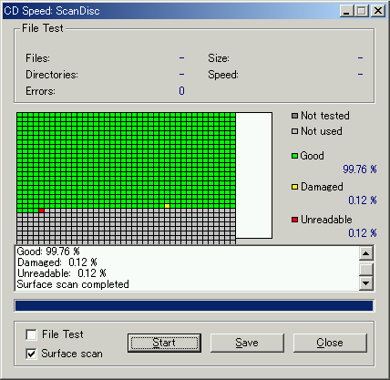
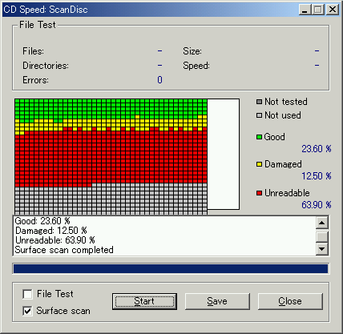
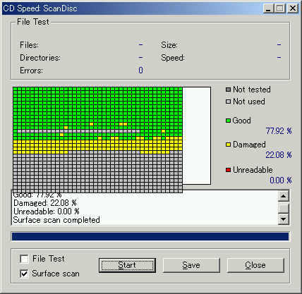
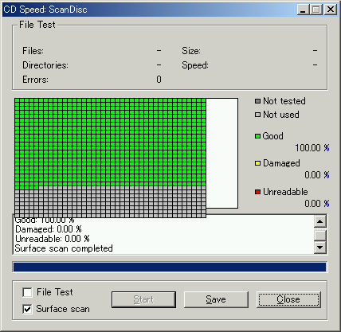

自宅マシンでのNero CD Speedの結果。
いろいろ測定してみて思ったことは、 フジとMaxellが怖いってことと、案外無事だってこと。 当時からそういう認識だったんで、 Maxellは台湾メディア並みの使い方をしてたけど、 誘電が案外やられているのが痛い。
フジのやられっぷりはすごいが、 それを除けば読める方が断然多いので安心した。 フタロは光に弱いとか聞いたんで、 三井がもっとやられてるかと思っていたんだけど、まるで無傷だった。 伊達に高いわけじゃないらしい。
プラケース保存の場合、記録面が浮いており、 隙間から光が入ってくる可能性がある。 外周部を避けて、300Mくらいまでしか記録しないのも手かも。
ちなみに、三井も誘電も、 最近のものは値段だけじゃなく質も下がっているそうです。
以下、なんとなく古そうな順。
1998/08/28と書いてある。おそらく持っている中で最も古いメディア。 データは無事だが、銀の反射層？がはがれかかっているのが怖い。 （回収騒ぎの対象だと思われる）
フジその2と同じような場所に保管されていたと思われる。 後半は死ぬほどの遅さになり、最後1セクタはunreadableだが、 File Testすると全ファイル読めている。

1998/09/04と書いてある。 当時わりと安かった。というか、当時は誘電なんて名前も知らなかった。
白っぽいジャケットから切り替わってすぐの黒っぽいジャケットのもの。 中のファイルから判断して1999/12頃。やはり誘電OEMだが、 2351ファイル中180ファイル読めないらしい。
Maxellと互角またはさらに安かった国産メディア。 保存場所がよかったものについてはちゃんと読める。 damaged率もmaxellより少ない。

こちらは保存場所が悪かったもの。 メディア20枚ほどを数ヶ月間窓際に置いていたんだが、 その中でも極端に日光に弱いようで、目視で変色がわかる。 この調子で4枚くらいやられた。
色素が緑っぽいけど、なんの色素だ？
maxellは総じてdamaged率が高かった。

上は、マルチセッションで書いて読めなくなったもの。 セッションの切れ目がunusedになっているのが面白い。 この結果からするとCDとして読めそうなものだが、 別メーカーのドライブでマルチセッションで書き足しちゃいかんのかな？
何の理由かは忘れたが、一時期の三菱メディアのラインナップは、 ジャケットの色違いでTDKのOEM品（黄色）と自社製品（緑・赤）が入り混じっていた。 安い三菱アゾばかり買っていたが、 なんとなく買った黄色い三菱。
ZY。
読めないZY。消えると嫌なものを誘電で焼いていたのだが…。
他に比べて断然高かったような記憶がある。
激安台湾メディアの代名詞だったプリンコ。
RITEKのブランド名かな。代表的台湾メディア。
ProdiscのOEM。台湾製。フタロだろうか、薄い黄色って感じ。

これだけ時期的に少し最近だが、それでも1年以上前。 多分台湾メディア。
Mail to:
hanawa <y@hnw.jp>